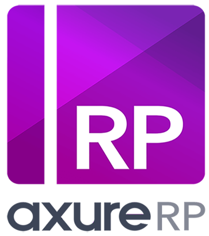
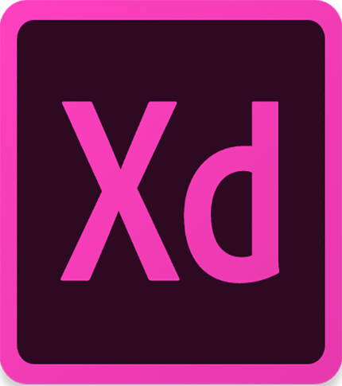

Sketch
One of the most popular UI design program is Sketch known mostly for designing interfaces, websites and icons. Sketch is very convenient and includes wireframes, diagramming, pixel-perfect mock ups and illustration.

Axure
Introduced in 2002 Axure RP Pro is known to be one of the most comprehensive tools for UX designers. Axure is well known in the UX design world, designers use it to create click through wireframes, user flows and sitemaps and interactive prototypes.
Mockplus
Mockplus was created by a startup called Jongde Software LLC. It known best for an alternative for rapid prototyping. It it used for both mobile and web application. It aids in efficiency due to the fact that it focusses on the design itself and less
on functions.

Adobe Experience Design CC
Adobe Experience is centered around Design and Prototype. The Design aspects allows users to feature simple vectors and text tools and used for making designs while the prototype aspect is for sharing and previewing.